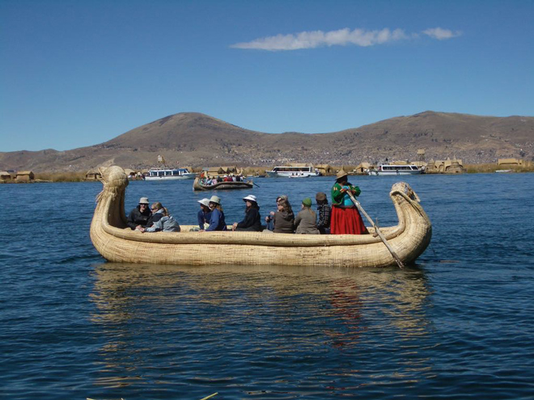
After an overnight stay in the Puno hotel, we took a guided tour of Lake Titicaca with a visit to the world-renowned Uros Floating Island.
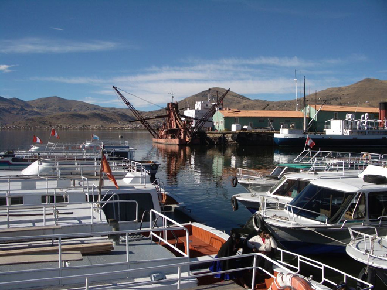
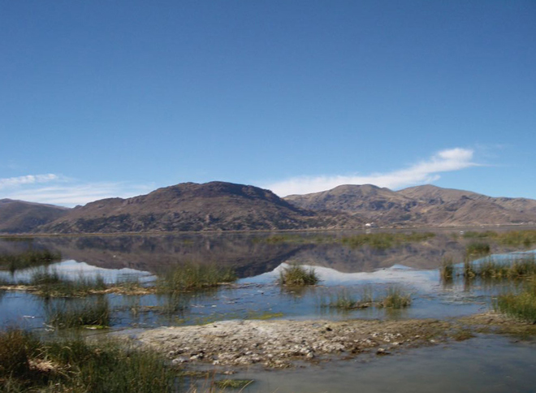
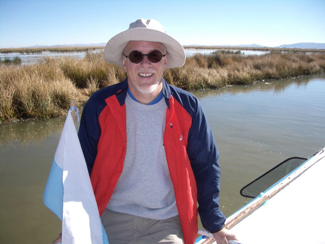
The floating islands are made from bundles of dried tortora reeds and the dense roots that the plants develop and interweave, form a natural layer called khili (about one to two metres thick) that support the islands. They are anchored with ropes attached to sticks driven into the bottom of the lake. The reeds at the bottoms of the islands rot away fairly quickly, so new reeds are added to the top every three months or so. This is especially important in the rainy season when the reeds rot much faster. The islands last about thirty years.
The larger islands house about ten families, while smaller ones, only about thirty metres wide, house only two or three families
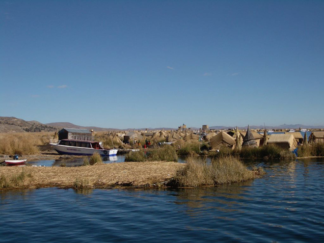
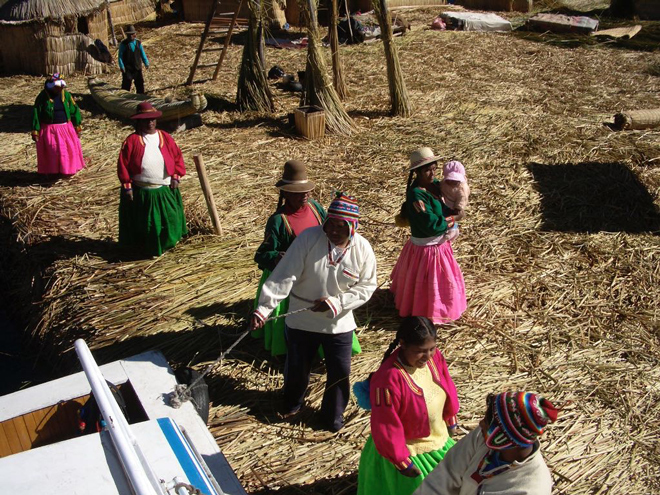
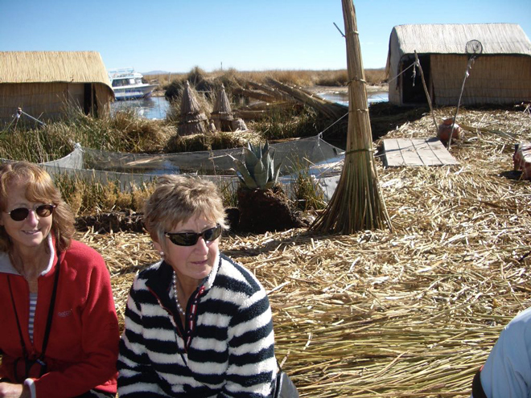
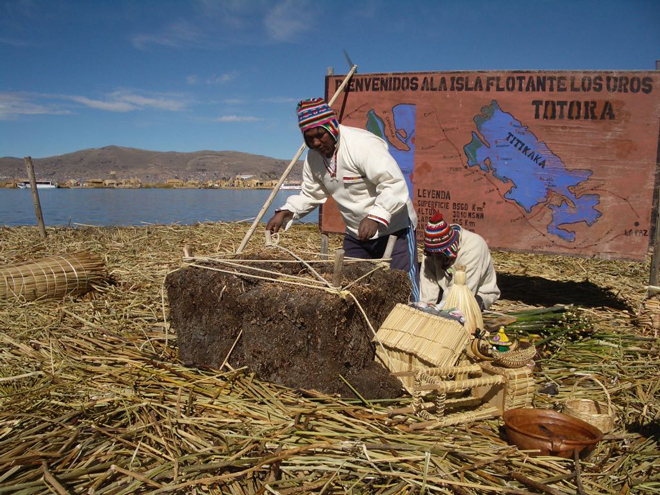
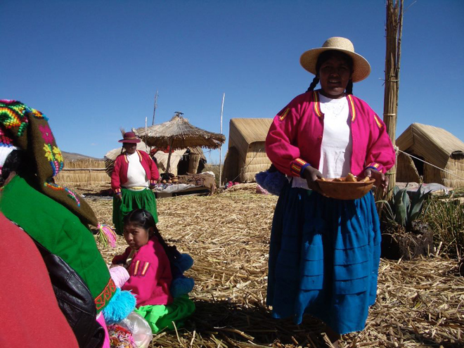
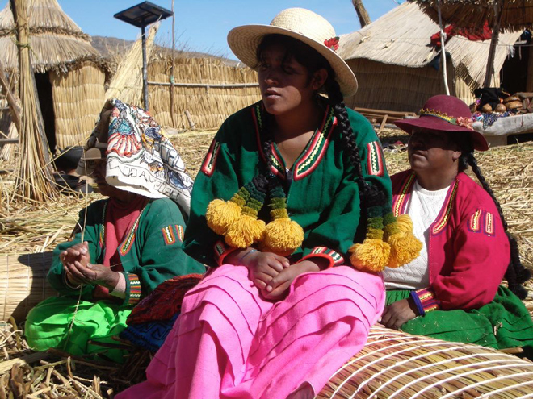
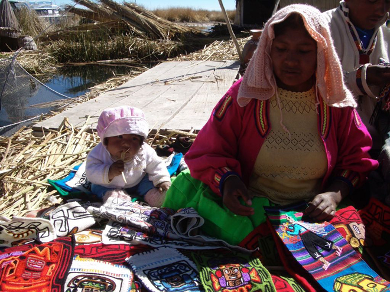
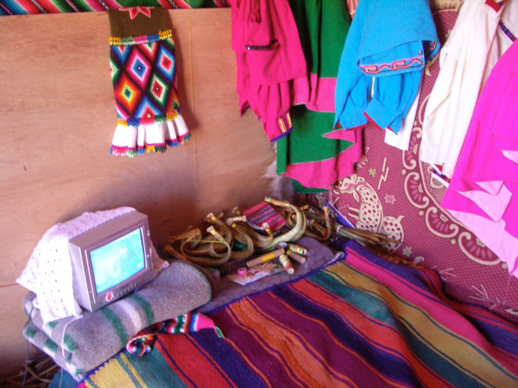
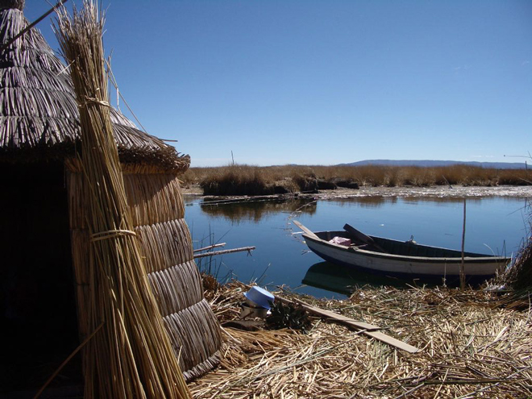
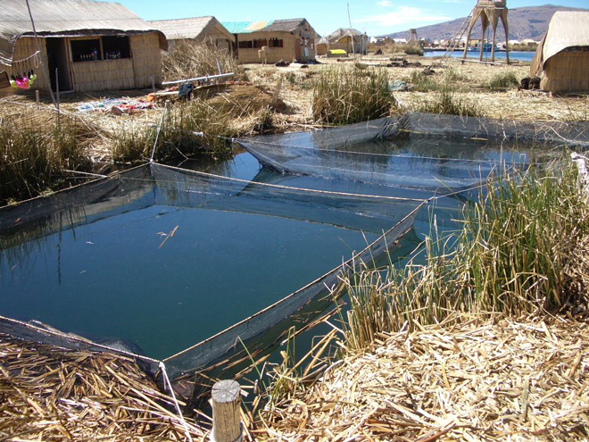
Their boats, like the floating islands themselves are made from bundles of dried totora reeds.
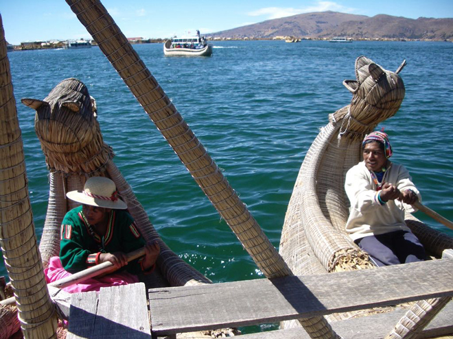
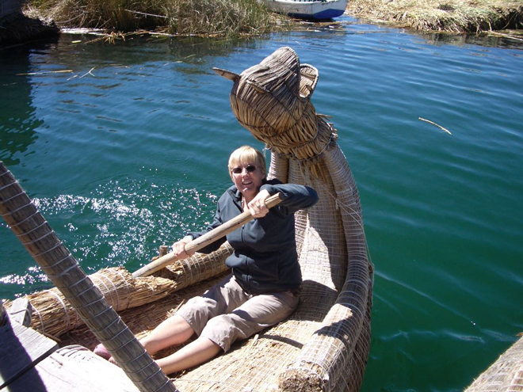
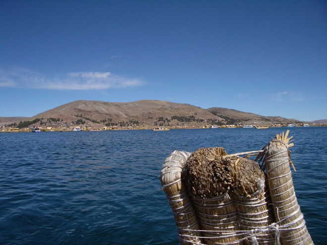
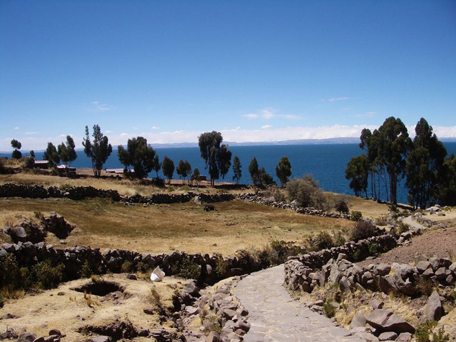
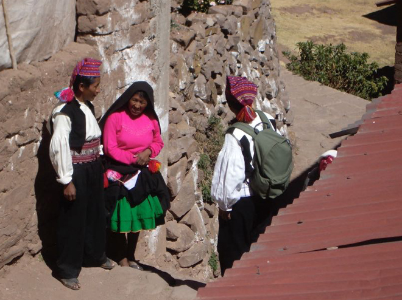
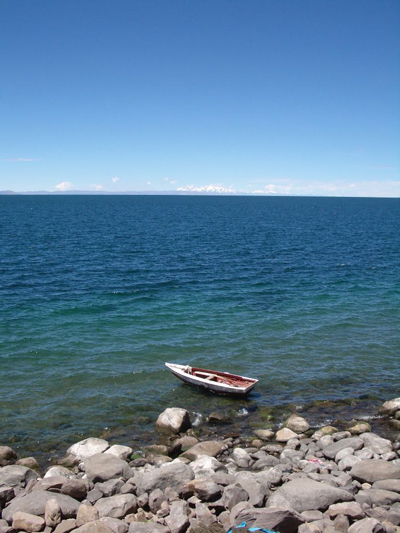
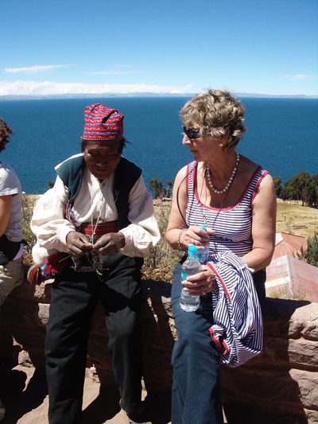
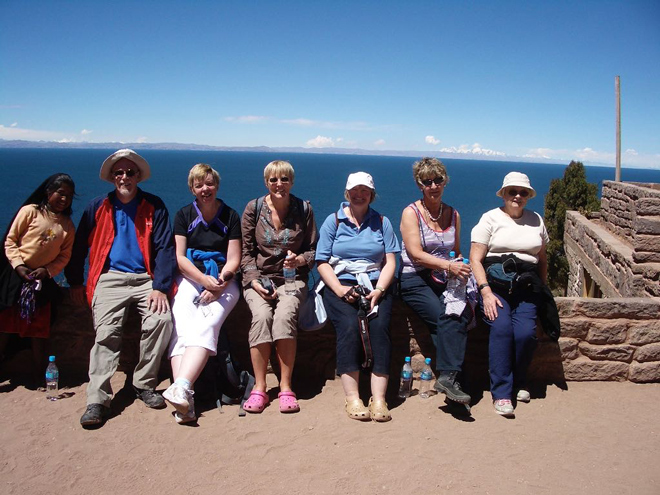
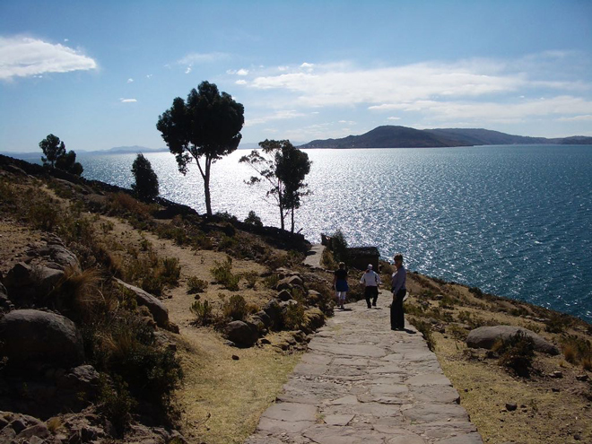
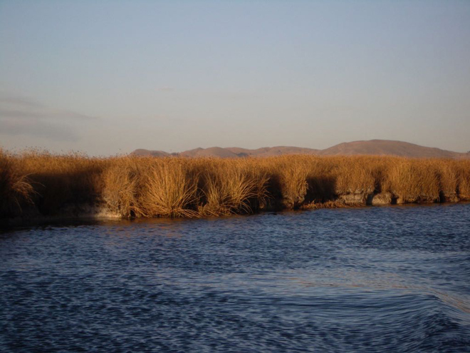
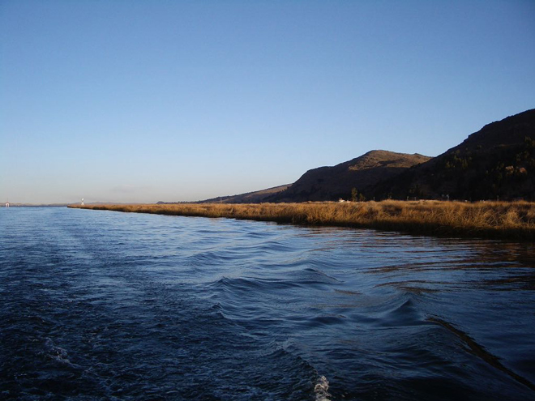
Then a transfer to Juliaca airport for a flight to Lima and then onto Madrid and London.
Overall, the trip raised over £85,000 for the Dogs for the Disabled charity.